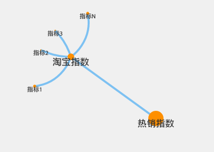

实习经历
-
淘宝网 EDP (数据平台与产品部)
2012-01 ~ 2012-03
实习期间学习NodeJS(Javascript)，接触异步编程，使用NodeJS、MongoDB基于Express框架开发了一个数据逻辑视图管理工具，用于展示和管理某一个产品指标从前端到底层数据的逻辑关系。并接触了数据开发、数据可视化等数据处理相关领域。


-
豆瓣网 (实习生暑期训练营)
2012-06 ~
主导开发两个项目：一：音乐人小站群发豆邮，音乐人小站的站长可以通过这个功能点群发豆邮给喜欢小站的成员，涉及到队列和缓存机制。二：由于做过音乐情感分类，跳到算法组。做的工作是大规模音乐曲库去重，在百万数量级的音乐中找出不同版本的同一首歌，涉及音乐指纹提取，相似性搜索。